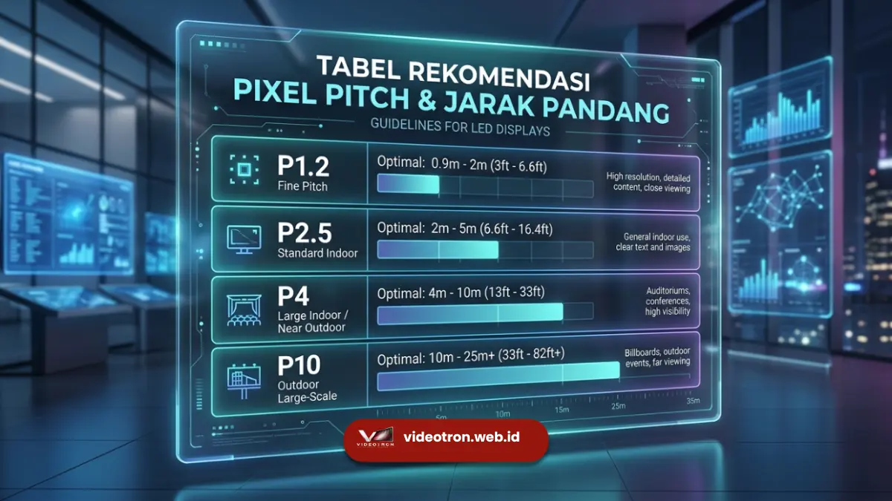

Cara memilih pixel pitch yang tepat adalah dengan mencocokkan ukuran pixel pitch dengan jarak pandang penonton terdekat, menggunakan rumus jarak pandang minimal (meter) sama dengan pixel pitch (mm) dikali satu, sehingga gambar terlihat jernih tanpa terlihat pecah atau bertitik.
Poin Kunci Panduan Ini:
- Pixel pitch adalah jarak antar titik LED, diukur dalam milimeter (mm)
- Semakin kecil pixel pitch, semakin dekat jarak pandang optimalnya dan semakin tinggi biayanya
- Rumus praktis: jarak pandang minimal (meter) = pixel pitch (mm) x 1
- Videotron outdoor umumnya memakai P4 hingga P10, videotron indoor P1.5 hingga P3
- Faktor tambahan seperti resolusi, budget, dan sudut pandang tetap perlu dipertimbangkan
Apa Itu Pixel Pitch dan Mengapa Memengaruhi Kualitas Gambar?
Pixel pitch adalah jarak antara satu titik LED (piksel) dengan titik LED terdekat berikutnya pada modul videotron, diukur dalam satuan milimeter, misalnya P2.5 berarti jarak antar piksel adalah 2,5 mm.
Angka pada pixel pitch berbanding lurus dengan kerapatan piksel per meter persegi. Semakin kecil angkanya, semakin rapat titik LED yang tersusun, sehingga gambar yang dihasilkan lebih halus dan detail meski dilihat dari jarak dekat.
Sebaliknya, pixel pitch yang besar membuat titik-titik LED lebih renggang, sehingga gambar baru terlihat mulus jika dilihat dari jarak yang cukup jauh.
Pemilihan pixel pitch yang keliru sering menjadi penyebab utama videotron terlihat pecah, bertitik, atau justru terlalu mahal karena resolusi yang dipasang melebihi kebutuhan sebenarnya.
Karena itu, pixel pitch bukan sekadar spesifikasi teknis, melainkan faktor penentu pengalaman visual dan efisiensi anggaran.
Rumus Dasar Menghitung Jarak Pandang Minimal
Industri videotron umumnya menggunakan rumus praktis berikut untuk menentukan jarak pandang minimal yang nyaman bagi mata penonton:
Rumus Praktis Jarak Pandang Minimal
Jarak Pandang Minimal (meter) = Pixel Pitch (mm) × 1
Sebagai contoh, videotron dengan pixel pitch P4 memiliki jarak pandang minimal sekitar 4 meter. Artinya, penonton yang berdiri lebih dekat dari 4 meter berpotensi masih dapat melihat titik-titik LED secara individual, sedangkan pada jarak 4 meter ke atas gambar akan terlihat menyatu dan halus.
Sebagian praktisi juga menggunakan rumus jarak pandang optimal (bukan minimal) dengan mengalikan pixel pitch dengan angka yang lebih besar. Umumnya antara 2 hingga 3, untuk mendapatkan pengalaman menonton yang lebih nyaman dalam durasi lama, misalnya pada videotron panggung konser atau iklan luar ruang.
Rumus ini bersifat pendekatan umum dan dapat sedikit bervariasi tergantung kondisi pencahayaan lokasi, sudut pandang penonton, serta jenis konten yang ditampilkan.

Tabel rekomendasi pixel pitch videotron berdasarkan jarak pandang penonton terdekat.Panduan Memilih Pixel Pitch Berdasarkan Lokasi Pemasangan
Pemilihan pixel pitch berbeda antara videotron indoor dan outdoor karena jarak pandang, tingkat kecerahan lingkungan, dan kebutuhan detail visualnya tidak sama.
Videotron Indoor
Videotron indoor umumnya dipasang di ruang yang memungkinkan penonton berdiri lebih dekat, seperti ballroom, lobi gedung, studio, atau ruang pameran.
Karena jarak pandang cenderung dekat, pixel pitch yang dipilih biasanya lebih kecil, berkisar antara P1.2 hingga P3, agar detail gambar tetap tajam meski dilihat dari jarak beberapa meter saja.
Untuk pilihan modul videotron indoor lengkap, Anda dapat melihat koleksi produk videotron indoor kami yang tersedia dalam berbagai pilihan pixel pitch fine pitch.
Videotron Outdoor
Videotron outdoor dipasang di area terbuka dengan jarak pandang yang jauh lebih jauh, seperti billboard jalan raya, panggung konser besar, atau fasad gedung.
Pixel pitch yang digunakan umumnya lebih besar, mulai dari P4 hingga P10 atau lebih, karena penonton rata-rata melihat dari jarak puluhan meter. Sehingga kerapatan piksel setinggi videotron indoor tidak diperlukan dan justru menambah biaya tanpa manfaat visual yang signifikan.
Temukan berbagai pilihan modul pada halaman produk videotron outdoor kami yang dirancang khusus untuk ketahanan cuaca dan visibilitas di luar ruangan.
| Lokasi | Pixel Pitch Umum | Jarak Pandang Minimal | Contoh Penggunaan |
|---|---|---|---|
| Indoor Dekat | P1.2 – P2 | 1,2 – 2 meter | Studio siaran, control room |
| Indoor Standar | P2 – P3 | 2 – 3 meter | Ballroom, lobi, pameran |
| Outdoor Dekat | P3 – P5 | 3 – 5 meter | Panggung kecil, acara outdoor |
| Outdoor Jauh | P6 – P10 | 6 – 10 meter ke atas | Billboard jalan raya, stadion |
Faktor Lain yang Perlu Dipertimbangkan Selain Rumus Jarak
Rumus jarak pandang adalah titik awal yang baik, namun beberapa faktor berikut juga memengaruhi keputusan akhir dalam memilih pixel pitch:
- Jenis konten yang ditayangkan. Konten dengan teks kecil atau grafik detail membutuhkan pixel pitch lebih kecil dibanding konten video sederhana.
- Anggaran yang tersedia. Pixel pitch yang lebih kecil umumnya berarti biaya modul dan instalasi yang lebih tinggi karena jumlah titik LED per meter persegi jauh lebih banyak.
- Sudut pandang penonton. Videotron yang dilihat dari berbagai sudut, bukan hanya lurus ke depan, sebaiknya mempertimbangkan spesifikasi viewing angle modul selain pixel pitch.
- Durasi penggunaan. Untuk instalasi permanen jangka panjang, memilih pixel pitch dengan margin jarak pandang lebih longgar dapat memberikan fleksibilitas jika kebutuhan konten berubah di kemudian hari.
Kesalahan Umum saat Memilih Pixel Pitch
Beberapa kesalahan yang sering terjadi saat menentukan pixel pitch videotron antara lain memilih pixel pitch sekecil mungkin tanpa mempertimbangkan jarak pandang aktual, sehingga anggaran membengkak tanpa manfaat visual yang terasa oleh penonton.
Kesalahan lain adalah mengabaikan kondisi pencahayaan sekitar, misalnya memasang videotron outdoor dengan brightness yang tidak sesuai pixel pitch-nya sehingga gambar terlihat redup di siang hari.
Kesalahan berikutnya adalah tidak memperhitungkan jarak pandang terdekat dari penonton, bukan hanya jarak pandang rata-rata, sehingga sebagian penonton yang berdiri lebih dekat tetap melihat tampilan yang kurang optimal.
Memilih pixel pitch yang tepat dimulai dari mengetahui jarak pandang terdekat penonton, lalu menyesuaikannya dengan rumus jarak pandang minimal sama dengan pixel pitch dikali satu. Setelah itu, pertimbangkan lokasi pemasangan (indoor atau outdoor), jenis konten, dan anggaran yang tersedia agar hasil akhir sesuai kebutuhan tanpa pemborosan biaya.
Jika masih ragu menentukan pixel pitch yang paling sesuai untuk lokasi dan kebutuhan Anda, tim teknis kami siap membantu memberikan rekomendasi spesifikasi videotron secara gratis. Hubungi kami sekarang untuk konsultasi lebih lanjut.
Pelajari juga perbedaan lebih detail antara videotron indoor dan outdoor serta cara menghitung ukuran videotron yang tepat agar hasil pemasangan Anda maksimal.

Hawa Nadira
LED Technology Consultant & Visual Educator
Konsultan dan spesialis solusi display digital berdedikasi tinggi yang fokus membagikan panduan edukatif mengenai penerapan teknologi layar LED videotron untuk kebutuhan interior modern di Indonesia.